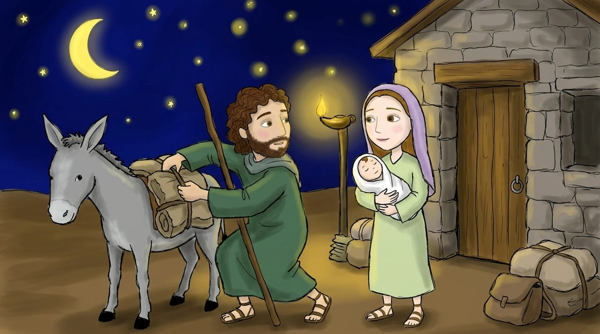

1 · Матфей 2:13–15
Снова сон
Иосиф снова получает слово во сне и в ту же ночь отправляется в путь. Как и в первой главе, Иосиф проявляет не на словах, а на деле.
Египет издревле был местом, где израильтяне находили убежище в трудные времена. В то время в Александрии также была большая еврейская община.
Взгляд в глубину · Сын, призванный из Египта
Матфей цитирует Осию 11:1: «Из Египта воззвал Я Сына Моего». На самом деле эти слова говорят об Израиля. Матфей показывает, что Иисус заново проживает историю Израиля и проявляет полное послушание там, где Израиль потерпел неудачу.